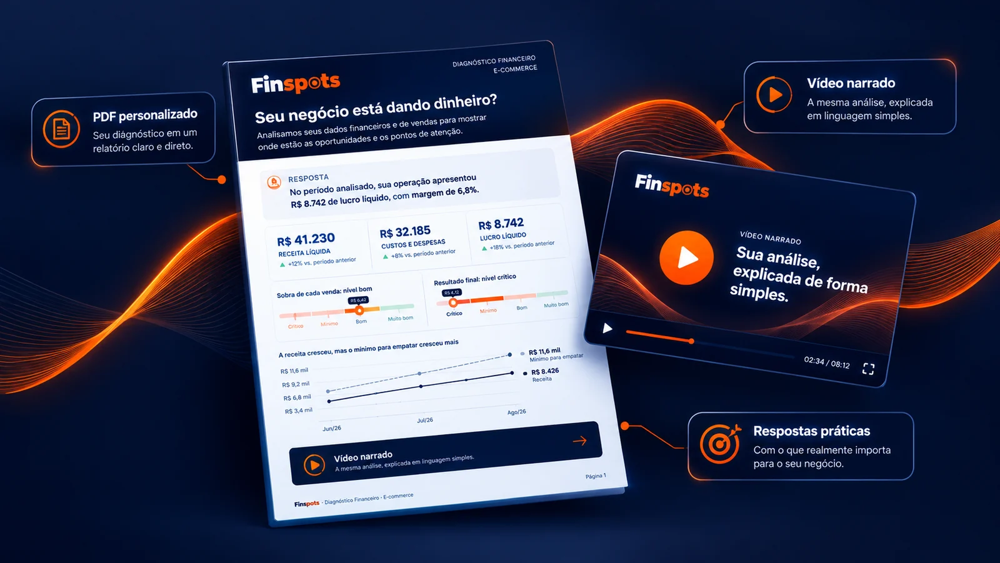

O Diagnóstico Financeiro e Vendas transforma os números da sua loja em respostas claras: o que está acontecendo, por quê, e o que merece atenção primeiro.
Você envia os dados. Nós fazemos a análise. Você recebe as respostas.
Sua loja pode vender todos os dias e, ainda assim, você não saber quanto realmente sobra.
O dinheiro entra, mas também sai: fornecedores, taxas, impostos, fretes e anúncios. Com tudo espalhado, o faturamento não conta a história completa.
E o problema costuma aparecer no caixa antes de aparecer no faturamento.
O problema não é falta de dados.
É falta de resposta.
Respondidas com os números da sua loja.
São 11 perguntas, em duas áreas. Em cada uma: o que está acontecendo, por que aconteceu e o que isso significa para a loja.
Se algum dado não for enviado, a pergunta que depende dele aparece como não realizada, com o motivo. Nada é inventado para preencher espaço.
Recebe respostas que consegue usar.

Em três passos, pelo WhatsApp.
Chame no WhatsApp. Você recebe a proposta com o valor e o link de pagamento.
Depois do pagamento, você recebe o formulário com os 4 últimos meses completos. Envie do jeito que tiver: relatórios das plataformas, extratos, planilhas. Não precisa organizar nada.
Em até 7 dias úteis, o PDF e o vídeo chegam no seu WhatsApp.
Não vendemos, não alugamos e não usamos seus dados para nenhuma outra finalidade.
Você pode pedir acesso, correção ou exclusão dos seus dados a qualquer momento, pelo WhatsApp.
Sem ele, só a pergunta sobre o caixa fica de fora. Você decide o que compartilhar.
O link do PDF e do vídeo vai só para você, pelo WhatsApp. O site não tem cookies de rastreamento.
Detalhes na nossa Política de Privacidade.
A Finspots foi fundada por Helaynne Alessandra, pesquisadora, especialista em marketing corporativo e analista financeira, com mais de 6 anos de experiência.
Loja online é uma das operações mais difíceis de acompanhar: são muitos dados, espalhados em plataformas e painéis diferentes. E muita loja pequena e média fecha mesmo faturando bem, porque a falta de clareza esconde o problema até ser tarde.
A Finspots existe para transformar essa complexidade em respostas claras.
O valor está na proposta, junto com o link de pagamento. É um pagamento único, que não muda com o número de canais. Chame no WhatsApp e enviamos a proposta.
Não. O relatório usa a linguagem do dia a dia da loja, e cada número vem explicado.
O essencial: os números dos 4 últimos meses completos: faturamento, devoluções, custo dos produtos, frete, custos fixos, pró-labore, pedidos e as vendas de cada canal.
Para a análise completa: os extratos bancários (para o caixa), os relatórios de vendas e o custo de cada produto (para produtos e estoque) e os dados de anúncios (para saber se o anúncio volta).
Você envia do jeito que tiver e nós organizamos. O formulário mostra campo a campo o que preencher e onde encontrar cada informação.
Sem problema. A pergunta sobre anúncios explica que não se aplica, e todas as outras continuam no Diagnóstico.
Sim. A cada 4 meses dá para fechar um novo período. A partir do segundo Diagnóstico, o relatório compara com o anterior: o que melhorou, o que piorou e se as prioridades saíram do papel.
Não. Ele ajuda você a entender a loja; não substitui serviços contábeis, fiscais ou obrigações legais.
Agora precisa das respostas.
Como a sua loja está.
O que merece atenção.
E por onde começar.